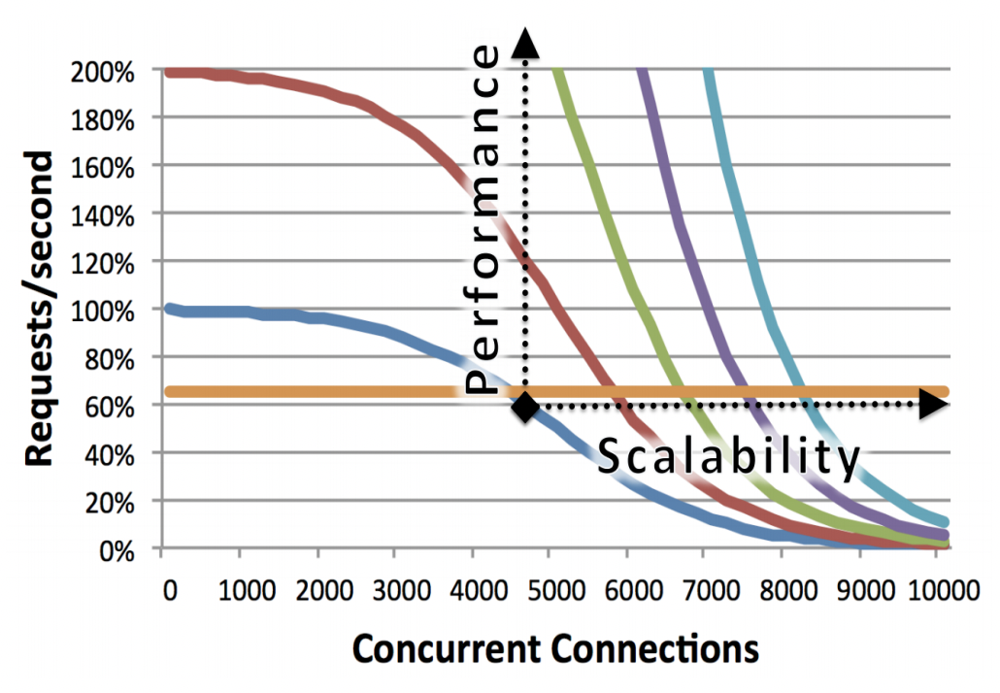

初识Nginx
Nginx 使用场景
首先，我们来看一下 Nginx 是什么？它主要用来做什么。
Nginx 有三个主要场景，分别是：
- 静态资源服务: 例如通过本地文件系统提供服务，将本地文件实现远程可访问。
- 反向代理服务: 得益于Nginx的强大性能，常用语于例如负载均衡，缓存等场景。
- API服务: 主要是指通过OpenResty的扩展从而实现API服务，可以作为网关或流量代理。

Nginx 的优点
那么，Nginx 主要有哪些优点呢？大致总结一下，主要体现在：
- 高并发、高性能。
- 可扩展，丰富的生态圈。
- 高可靠性，可以长时间的为稳定运行。
- 热部署，可以在不停止服务的情况下对Nginx进行升级。
- BSD许可，开源、免费、可以自定义修改。

相对来说，Nginx 同时具备了高并发和高性能的特点。
Nginx 的组成
Nginx 的组成非常简单，主要包含如下四个部分：

Nginx 版本选择
Nginx 的下载地址如下: https://nginx.org/en/download.html
目前，Nginx 最新的 Mainline 版本是 1.21.0，Stable 稳定版本为 1.20.1。
Ps: 其中，中间版本号为奇数时，为主线开发版本，中间版本号为偶数时，为 Stable 稳定版本。
对于普通用户而言，建议使用Stable版本，而如果想要体验新功能的话，则可以使用mainline版本。

点击CHANGES，可以清楚的看到每个发布版本中的修改内容，包括新功能，Bugfix等以及发布信息。

上图表示了 nginx 近些年来发版、Bugfix、重构、新功能等的变化数量。
NginxPlus
Nginx 本身是开源的，不过同时 Nginx 也提供了商业版本。
- 开源版本Nginx的地址是: nginx.org
- 商业版本NginxPlus的地址是：nginx.com
那他们有什么区别呢？
商业版本的NginxPlus在第三方工具整合，使用支持方面有更好的支持，但是缺点是它并不开源，因此，其实我们并不常使用NginxPlus。
Tengine
Tengine 是阿里巴巴在 Nginx 的基础上，针对大访问量的需求，添加了很多高级功能和特性。Tengine 在阿里的产品中得到的有效的验证， 同时，Tengine也是一个开源项目，我们也可以参与其中进行开发和共建，但是由于Tengine是基于Nginx历史版本进行改造的，无法始终与Nginx保持版本同步， 因此，Tengine的版本往往落后于Nginx版本很多，因此其实我们也并不推荐。
开源版OpenResty
OpenResty 是针对 Nginx 扩展了 Lua 语言开发第三方插件。
通过 Lua 的扩展，OpenResty 可以同时以非常低成本和便捷的方式来开发第三方插件，从而快速的扩展Nginx的功能。
商业版OpenResty
商业版OpenResty相比社区版而言，主要是增加了技术支持，因此，我们其实并不常用商业版的OpenResty。
Nginx 的编译与安装
Nginx 的安装主要可以分为两种方式：
- yum, apt-get 等包管理工具快速安装。
- 源码编译安装。
其中，通过yum, apt-get等工具安装时，有一个非常大的问题，就是我们无法设置对应的编译参数，例如开启哪些模块等。
因此，在Nginx安装时，我们通常会使用源码编译的方式进行安装。
使用源码编译、安装Nginx主要分为以下4个步骤：
- 下载 Nginx 源码
- Configure
- 编译 Nginx
- 安装 Nginx
Step1: 下载所需的 nginx 包，我们以 1.20.1 的 stable 版本为例：
wget https://nginx.org/download/nginx-1.20.1.tar.gz
tar -zxvf nginx-1.20.1.tar.gz
cd nginx-1.20.1
解压后的目录结构如下:

其中：
- auto目录：包含cc, lib, os, types 等相关目录，用于辅助编译和跟进操作系统进行相关判断。
- CHANGES: 显示每个版本的迭代功能特性
- conf: 示例配置文件目录
- configure: 配置脚本
- contrib: 包含 vim 的 nginx 高亮插件等，可以
cp -r contrib/vim/* ~/.vim/实现nginx vim页面高亮显示 - html: 提供了index.html和50x的html页面
- man目录包含了nginx的相关帮助文档
- src目录包含nginx的源码
Step2: Configure 设置编译配置
首先，我们来看一下配置脚本支持哪些参数：
其中，一些常用参数如下：
- prefix 指定了nginx编译后的安装目录。
- modules-path 指定了动态引入模块的模块路径。
- with-xxx_module 表示启用哪些nginx内置模块。
- without-xxx_module 表示禁用哪些nginx内置模块。
- with-xxx 表示指定依赖对应的目录，例如pcre, openssl等依赖的目录等。
一个最简单的nginx配置命令如下：
./configure --prefix=/home/wangzhe/nginx
在执行完 configure 命令后，会生成一些中间文件，文件文件位于objs目录下。
其中，最核心的文件是nginx_modules.c文件，它表明了在接下来的编译过程中，有哪些模块需要编译进来。
Step3: 编译
接下来的操作就非常简单了，只需要执行make进行编译即可：
make
其中，生成的二进制nginx文件同样位于objs目录下。
Step4: 安装
编译完成后，执行如下命令即可安装:
make install
Ps: 如果是首次安装，可以直接执行上述命令，但是如果希望做热升级，则不能直接进行make install，后续我们会讲解如何进行热升级。
Nginx 的配置文件语法概述
了解了如何进行 Nginx 安装后，下面我们先来初步了解一下 nginx 的配置文件语法。
nginx 的配置语言语法主要包含如下几点：
- 配置文件由指令块和指令组成。
- 每条指令以 ; 分号结尾，指令和参数之间使用空格进行分隔。
- 指令块以 {} 大括号将多条指令组织在一起。
- include 语句允许组合多个配置以提升可维护性。
- nginx配置文件中使用 # 进行行注释。
- nginx配置文件中使用 $ 来使用变量。
- 部分指令的参数支持正则表达式。
一个示例如下：
nginx 中涉及到时间的配置通常支持如下单位:
- ms: 毫秒
- s: 秒
- m: 分钟
- h: 小时
- d: 天
- w: 周
- M: 月
- y: 年
nginx 中涉及到空间大小的配置通常支持如下单位:
- 无单位: 字节
- k/K: KB
- m/M: MB
- g/G: GB
nginx 中的指令块主要包含如下4个：
- http: 内部的所有指令均针对http协议，由http模块进行解析。
- server: 对于一个/组域名，表示对外提供的服务。
- upstream: 表示上游服务。
- location: url表达式。
Nginx 的命令行常用操作
通过 nginx 的命令行，我们可以实现 nginx 管理的全部操作，例如 nginx 的启动、停止、重新加载配置文件、热升级等等一系列操作。
通过nginx -h可以查询nginx命令行的帮助文档。
基本的语法格式如下:
nginx [-?hvVtTq] [-s signal] [-p prefix] [-e filename] [-c filename] [-g directives]
其中：
- -c 指定配置文件。
- -g 指定配置指令，即可以在命令行中覆盖配置文件中的指令。
- -p 指定运行目录。
- -s 用于发送信号，常用的信号包括 stop（立即停止服务），quit（优雅停止服务），reload（重新加载配置文件），reopen（重新开始记录日志文件）
- -t/T 用于测试配置文件是否语法错误。
- -v/V 用于打印版本和编译信息等。
常用的命令如下：
重载配置文件
当 nginx 的配置文件发生修改后，我们需要让 nginx 对配置文件进行重载后，修改后的配置文件才能生效。
./sbin/nginx -s reload
热部署
热部署是指当前 nginx 已经处于生产环境中正在运行了，此时，我们下载了一个新的nginx，希望对nginx进行无损升级。
Step1: 替换 nginx 二进制文件
mv nginx nginx.old
cp nginx_new nginx
Step2: 发送热部署信号给Nginx Master
kill -USR2 ${nginx master pid}
Step3: 此时， nginx 会启动一个新的 Nginx Master 进行，并自动实现无损流量切换。
Step4: 发送优雅退出信号给旧的Nginx Master，让旧的Nginx Worker进程优雅退出。
kill -WINCH ${nginx master pid}
Step5: 当确认升级没有问题后，可以再次kill掉旧的Nginx Master进程。
日志切割
通过nginx命令行，我们还可以实现Nginx日志的文件切割，避免单个文件过大。
# 第一步: 备份已经打印的nginx日志
mv logs/access.log logs/access.log.bk
# 第二步: 发送命令让nginx重新打印日志
./sbin/nginx -s reopen